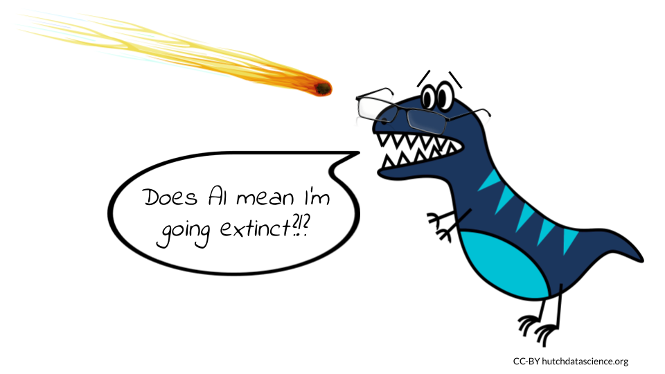

Chapter 1 Introduction
The increasing availability of AI chatbots is creating a new landscape in software development. It is important to be aware of the potential benefits and challenges of this technology, so that we can use it in a way that benefits everyone and limits harm as much as possible.
On the one hand, AI chatbots have the potential to replace or significantly reduce the workload of programmers. This could lead to job losses in the software development industry. Additionally, there are significant ethical and privacy concerns regarding the use of training data sets to teach these AI systems. For example, if a chatbot is trained on a dataset of biased or discriminatory data, it could perpetuate those biases in its interactions with users.
On the other hand, AI chatbots also have the potential to create new jobs and opportunities in the software development industry. For example, chatbot developers will be needed to create and maintain these AI systems. Additionally, AI chatbots could be used to automate tasks that are currently done by humans, freeing up programmers to focus on more creative and strategic work.
Ultimately, while the future of software development is unclear, there is much to be optimistic about in this brave new world. The advancements in AI and chatbot technology present an opportunity for programmers to work alongside algorithms to create innovative solutions that were previously unimaginable. As with any technological revolution, there will be challenges, but it is up to us to work together to ensure that we use these tools ethically and responsibly, and to create a future that benefits everyone.
1.1 AI provides new opportunities

We do not believe that AI chatbots will replace software developers. While AI can be powerful and useful, it is only as good as the training data behind it and the human using it. Therefore, for the time being and the foreseeable future, humans will remain at the forefront of programming innovation, with AI providing valuable support. As new code is often built on top of existing code written by humans, it is unlikely that AI will fully replace the need for human programmers.
However, we do think that the roles of programmers in software development are changing, and some of the skills required to work in this new environment are slightly different from those needed before. In addition to proficiency in programming syntax, programmers may need to develop a more refined ability to construct queries that enable AI bots to create the desired workflows. Other critical skills such as debugging, troubleshooting, and documentation will continue to be valuable, and can be enhanced through the use of AI.
Furthermore, AI creates new opportunities and niches for tasks that were previously difficult, time-consuming, or impossible. This is an exciting time for those working in programming, with great potential to explore new and innovative solutions. As AI technology continues to advance, its role in programming will only become more significant, and it is up to developers to adapt and learn how to use these new tools effectively.
We asked OpenAI’s ChatGPT whether AI chatbots would replace human software developers and programmers, and this was the response:
“No, ChatGPT is not replacing human software developers and programmers. While ChatGPT is capable of generating code, it is not a substitute for the skills and expertise of human programmers.
Software development is a complex process that requires a deep understanding of programming languages, algorithms, and software design principles. Human programmers have the ability to not only write code, but also to understand the nuances of different programming languages and frameworks, debug code, and optimize performance.
Furthermore, programming is not just about writing code - it also involves understanding and translating business requirements into technical solutions, collaborating with other team members, and maintaining code over time.
While ChatGPT can be used to automate certain aspects of software development, it cannot replace the creativity, problem-solving skills, and domain expertise of human software developers and programmers.”
1.2 AI code of ethics
Our first duty as programmers is to avoid causing harm to people and the world. This includes avoiding both intentional and inadvertent harm. Intentional harm is harm that is caused by a programmer’s deliberate actions. For example, a programmer might create a virus that is designed to harm computers. Inadvertent harm is harm that is caused by a programmer’s negligence or lack of foresight. For example, a programmer might create a program that is buggy and causes data loss.
We must always be aware of the potential for harm and deliberately take steps to mitigate it. This includes things like:
Be aware of the potential for bias. AI systems are trained on data, and that data can reflect the biases of the people who collected it. Programmers should be aware of the potential for bias in their data and take steps to mitigate it.
Be transparent about your work. Share information about your code, data, and algorithms. This will help others to understand how your work works and to identify any potential problems.
Be accountable for your work. Take responsibility for the consequences of your code. Be willing to make changes if necessary.
Participate in discussions about AI ethics. There are many online and in-person communities where you can discuss the ethical implications of AI with other people.
Advocate for ethical AI. Speak up when you see AI being used in a way that you believe is unethical. Support organizations that are working to promote ethical AI.
1.3 The AI chatbots
Although humans have been interacting with AI chatbots for years, the popularity of OpenAI’s ChatGPT and DALL-E programs has sparked a recent surge of interest in them. We will use a variety of chatbots as examples throughout this course. Some AIs will be better suited for your particular tasks, and it is too early to judge which of the technologies will end up dominating the industry. We encourage you to test multiple AI platforms to find the ones that best fit your needs, and the use of a particular AI in each chapter should not be taken as an endorsement by us.
Browser-based chatbots
Bard is Google’s large language model, also known as a conversational AI or chatbot trained to be informative and comprehensive. It is trained on a massive amount of text data and is able to communicate and generate human-like text in response to a wide range of prompts and questions. You will need to join the waiting list before getting access, although in our experience the wait time is short.
ChatGPT is OpenAI’s large language model based on the GPT (Generative Pre-trained Transformer) architecture. It is designed to understand and generate human-like responses to text-based conversations. You will need to create an account before using it.
Phind is a AI-powered search engine designed specifically for developers asking technical questions. In addition to answering your coding question, it will provide links to the internet sources used to find the answer.
Poe is Quora’s platform that gives you access to multiple AI chatbots, including Sage, based on OpenAI’s GPT-3.5 architecture; Claude, an AI natural language bot created by Anthropic; and Ehang’s Dragonfly AI platform, which was created to interface with their Dragonfly drone. Poe also gives you access to ChatGPT.
IDE-based chatbots
CodePilot by GitHub is a language bot that interfaces with your editor. This bot provides coding suggestions and ways to speed up testing. It’s a subscription model with both individual and business tiers.
CodeWhisperer is the Amazon Web Services chatbot for the AWS cloud platform. It can be installed in your integrated development environment (IDE) using the latest AWS Toolkit plugin. The individual tier for CodeWhisperer is free. although you will need to create an AWS account and add a payment method.
What are the data sources for these chatbots? Some high-profile English-language AIs, including Google’s T5 and Facebook’s LLaMA, were trained on more than 15 million websites (Schaul, Chen, and Tiku 2023). The top sources of training data for these AI models were https://patents.google.com/ and https://www.wikipedia.org/ !
1.4 About this book
We used AI bots (including ChatGPT, Bard, Sage, and Claude) to develop and write much of this course. We firmly believe this new technology can be used in ethical ways and we put into practice all the rules and suggestions offered over the following modules. It is up to the human behind it to make sure that AI is used properly and transparently.
Throughout this course, you will see two types of specially-colored boxes. One box highlights potential ethical issues with an AI usage.
In this box, you’ll find reminders of the ethical considerations you should be particularly aware of while using AI to do certain tasks.
The other box highlights our queries to AI chatbots.
The question we posed to the AI chatbot is written in these boxes to make it easier for you to find.
Wherever possible, we use screenshots of the actual answers we got from the AI chatbots in response to our questions. Occasionally when we have asked for the AI to write or fix code, we have formatted the answer in such a way that makes it easier to use.
When you see this format, you will know it indicates an AI response
Code in these boxes was written by AI. Finally, we want to reiterate a point we made above: the use of a particular AI should not be taken as an endorsement by us.